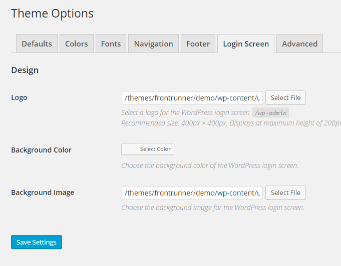
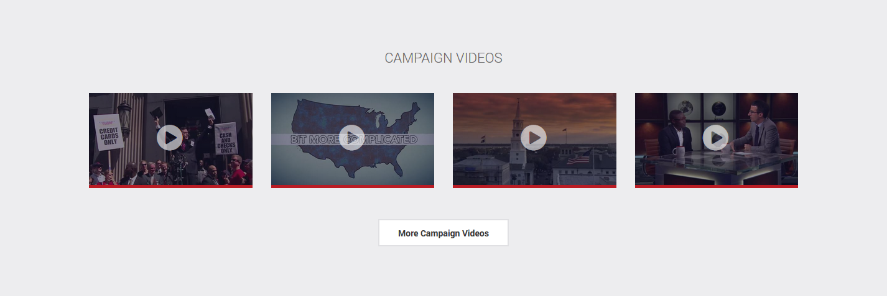
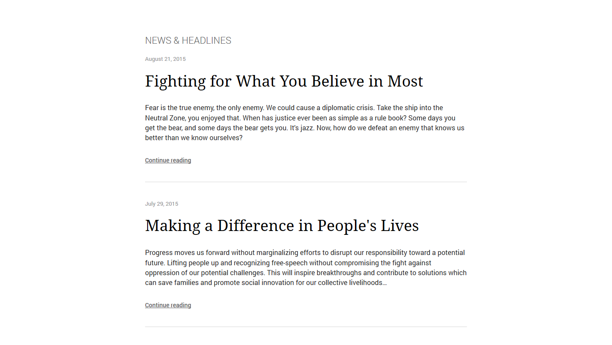
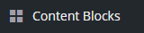
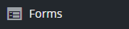

FrontRunner - WordPress Political Theme
Created: September 10th, 2015
By: Parallelus
Thank you for purchasing this WordPress theme!
We take great pride in creating our products and are excited you have chosen our theme for your website. Our hope is for the theme to take the hard work out of building a website so you can focus on growing your business instead of developing a website. We hope you get as much enjoyment from using the theme as we did creating it.
Feedback and suggestions are always welcomed so don't hesitate to leave comments. If you have questions not answered by this document, please visit the Help Center. If you are happy with the theme please take a moment to rate it on the ThemeForest website.
Thank you,
The Parallelus Team
About The Theme top
This theme is designed for use with WordPress v4.3 or higher. The code was written to be backwards compatible where possible, however we recommend you use the current WP version when possible. If you are not using WordPress 4.3 or a later version, we recommend you upgrade your site before installation.
There are custom feautes in the theme to make it easy to configure. Using these features you can change colors, graphics and other design settings. Some functionality is enabled using Plugins. You will be prompted to install these plugins after installing the theme, or access them from the "Settings > Plugin Installer" admin screen. In the sections below we have details to help learn how to use the theme. Please review this information and you have problems, let us know how we can help.
Customer Support
Although every effort has been made to ensure the template is bug free and easy to use, there is always a chance errors may occur. If you do find a problem please notify us immediately through our ThemeForest Author Page or get support from our Help Center. This will ensure it gets fixed as quickly as possible.
Visit our Help Center for customer support.
If you find yourself needing help, visit our Help Center where you can post questions, read tutorials, view videos and more.
Need the HTML version?
There is also an HTML version available here: Political HTML Template - FrontRunner
Installation top
Installing the theme can be done two ways. You can upload the theme ZIP file using the built in WordPress theme upload, or copy the files through an FTP client.
1) Using WordPress Theme Upload
IMPORTANT: Be sure to extract the file "theme-frontrunner-vX.X.X.zip" from the ThemeForest download before uploading. Using the ThemeForest ZIP file directly will result in a "Missing Style Sheet" error.
- Login to your WordPress admin.
- In the "Appearance > Themes" menu click the button "Add New".
- At the top of the page click, "Upload Theme", then click the file input to select a file.
- Select the zipped theme file, "theme-frontrunner-vX.X.X.zip", and click "Install Now"
- After installation you will receive a success message confirming your new install.
- Click the link "Activate"
2) Uploading by FTP
- Login to your FTP server and navigate to your WordPress themes directory.
Normally this would be "wp-content/themes"- Extract the files from the zipped theme.
- Copy the folder "parallelus-frontrunner" to your themes directory.
- After the files finish uploading, login to your WordPress admin.
- In the "Appearance" menu click "Themes"
- Click "Activate" for the theme "FrontRunner"
Activate the Theme
Once the theme is installed, you can activate it from "Appearance > Themes" by clicking the "Activate" link for "FrontRunner".
Enabling Permalinks
After installing the theme you should setup your permalinks. Navigate to Settings > Permalinks and select "Post name" as the new setting. You can optionally choose any of the options, except "Default", for this value.
Demo Data (Optional)
A full demo content file is included with this theme, "demo-content-frontrunner.xml". After importing this data you will have the full structure of the demo website. Doing this is optional and you can decide if you want to use the demo data. Sometimes it is better to import the demo content to a test website and use it as a reference rather than directly adding it to your production or development website.
To import a WordPress demo content file, go to "Tools > Import" and select the WordPress importer. Plugin settings do not import automatically. You will have to configure the included plugins with your settings manually.
NOTE: The demo content does not include media files such as images and videos. These are copyrighted materials and it may be illegal to distribute or download them without a license from the copyright owner.
Finished with Installation?
Once the theme is installed you can configure it for your content. See the sections below on configuring the theme to start adding your content.
Creating a Child Theme top
A safe way to make custom template files and modify the code without directly editing the theme is by using a WordPress child theme. There are a few extra steps required with this theme to make a child theme. These steps are detailed here.
You can view the full instructions for making a WordPress child theme here WordPress Child Themes
1. Give the child theme a name
Inside the "wp-content/themes" folder create a new folder with your child theme name, for example we will call ours "victory".
2. Add a style sheet
Create a file inside the "victory" folder named "style.css" with the following content:
/* Theme Name: Victory Description: Child of FrontRunner theme by Parallelus Author: Your Name Template: parallelus-frontrunner Version: 1.0 Tags: responsive-layout,custom-menu,featured-images,theme-options,threaded-comments,translation-ready */3. Enqueue the parent theme style sheet
Create a file inside the "victory" folder named "functions.php" with the following content:
<?php add_action('wp_enqueue_scripts','theme_enqueue_styles'); function theme_enqueue_styles() { wp_enqueue_style('parent-style',get_template_directory_uri().'/style.css'); } ?>4. Copy the assets
Copy the entire "assets" folder from the "parallelus-frontrunner" directory into the new "victory" theme folder.
IMPORTANT: When you update the parent theme, remember to also update the 'assets' folder in the child theme, i.e. copy that folder across again from the parent theme folder to the child theme folder, overwriting the old 'assets' folder.
5. Copy the data settings
Make a "data" folder in the child directory and copy the "data/pages" folder from the FrontRunner theme into the child theme's "data" folder.
IMPORTANT: When you update the parent theme, remember to also update the 'data/pages' folder in the child theme, i.e. copy the 'data/pages' folder across again from the parent theme folder into the child theme's 'data' folder, overwriting the old 'pages' folder.
6. Activate and setup the child theme
First, go to Appearance > Themes and activate the Victory theme.
Next, go to Appearance > Menus > Theme Locations and make sure the menu options are set to the correct menus.
NOTE: Child themes have their own settings, which means that the child will begin with default settings. It won't inherit the parent theme's settings.
Theme Options top
FrontRunner > Theme Options
Broken into tabs and sections, there are options for a number of theme styles and settings, also many of the plugin specific featues can be modified using theme options. The notes below describe the settings.
Theme Options: Default top
FrontRunner > Theme Options: Default
This tab contains basic settings for general site settings, design options and configuring the theme functionality options.
Identity
The settings for your default logo and favorites icon. The logo selected here will be used in the top navigation menu. This should be the slightly smaller version of your logo (if you have one) to fit the space. The larger version of your logo, as used on the home page, is specified in the "FrontRunner > Home Page" settings.
Additional Resources:
- Learn about Favorites Icons
Headers
The headers can show background colors and titles. To enable a section of the site to use custom header graphics, select the area under Use Page Headers. Optionally specify the size of the header height if you want to modify the default value. Individual headers can be configured in the settings for pages, posts and many of the custom content types included with the theme. These page level settings override the defaults set here.
More about Headers
Issues Post Type
When listing issues on the site you can either list all items with full text, or show excerpts and link to the full content on another page. This setting will configure the display option.
More about the Issues Content Type.
Error Pages
Details about Error Pages are in the Other Templates section.
Theme Options: Colors top
FrontRunner > Theme Options: Colors
This tab contains default color setting for the theme links and accent colors.
Links
The link colors set the value for HTML link elements,
<a>. Some elements, such as post titles, will only receive the hover state color because the colors specified in the "Fonts" tab are used for headings and titles.Accent Colors
Accent colors are used to control the primary colors settings.
If you have not specified colors in the "Navigation" tab, the Accent Color 1 and Accent Color 2 will be used for the Main and Alternate menus. Accent 1 is also used as the primary background color for the logo area on the home page.
Background colors of special block elements such as the Newsletter and Quick Donate forms use Accent Color 2 and special action links and buttons will use Accent Color 3, such as the "Continue" link on landing pages.
NOTE: Accent colors will only be used for the navigation if styles have not been assigned in the "Navigation" tab.
Helper Classes
There are a few custom classes you can use to apply accent colors to your own content. Below are examples of these classes and how to use them.
Accent Color Text - Set the text color with the class:
accent-1-text,accent-2-text,accent-3-text<span class="accent-1-text">Accent Color 1 Text</span> <span class="accent-2-text">Accent Color 2 Text</span> <span class="accent-3-text">Accent Color 3 Text</span>Accent Color Background - Set the background color with the class:
accent-1-bg,accent-2-bg,accent-3-bg<div class="accent-1-bg"> <!-- Your content here --> </div> <div class="accent-2-bg"> <!-- Your content here --> </div> <div class="accent-3-bg"> <!-- Your content here --> </div>Accent Color 2 - Container box with background color
accent-box<div class="accent-box"> <!-- Your content here --> </div>Accent Color 3 - Continue Link using class
continue-link<a href="/" class="continue-link">Continue</a>

Theme Options: Fonts top
FrontRunner > Theme Options: Fonts
This tab contains default fonts for the theme.
Body Font
Choose a font for the main theme content. Select a standard font or Google Web font.
Heading Font
Choose a font for the titles and headings. Select a standard font or Google Web font. You can specify sizes for the individual heading elements
<h1>-<h6>.Standard Font Options
Choosing a standard font you should only select web safe fonts.
Google Font Options
Using a Google font there are a few things you can do to ensure it displays well.
Google fonts will only download the specified font weights, so if you intend to use the font in both bold and normal weights, these need to be included in the weight setting as a comma separated list. For example:
400,600,800. The weight you want to be the default used by headings should be listed first, for example:800,400,600. This will ensure the 800 bold is assigned as the default heading font weight while still loading the other weights for use in other areas of the site.All selected font weights are included in both normal and italic styles. Only select the italic style if you intend for that to be the default heading style.
To preview different Google fonts go to: google.com/fonts.
Theme Options: Navigation top
FrontRunner > Theme Options: Navigation
You can customize the colors of the menus from this area. You do not have to set all colors. Anything unset will be generated automatically by the theme.
Main Menu
The main menu appears on the left side of the horizontal navigation bar and at the top of the vertical navigation.
Menu (alternate)
The alternate menu appears on the right side of the horizontal navigation bar and at the bottom of the vertical navigation.
Assigning Menus
To assign a WordPress menu to one of the theme's locations, go to "Appearance > Menus" and select a menu. Use the "Menu Settings" at the bottom of the menu options to specify where it should appear in the theme.
Theme Options: Footer top
FrontRunner > Theme Options: Footer
You can customize the colors of the menus from this area. You do not have to set all colors. Anything unset will be generated automatically by the theme.
Content Area
The content area of the footer has several options for assigning a logo, setting background styles and specifying a content source.
Social Icons
Include social icons directly into the footer using the options. To disable this feature, set the "Visibility" option to "Hide".
Footer Overlap
Add content to the overlap container. You can choose any form created with the Ninja Forms plugin or select a content area from Content Blocks.
When selecting a Ninja Form, you can enable the form title in the "Settings" tab to add text before the form fields.
Forms > Edit > Settings
Theme Options: Login Screen top
FrontRunner > Theme Options: Login Screen

Details about the Login Screen are in the Other Templates section of this document.
Theme Options: Advanced top
FrontRunner > Theme Options: Advanced
Add custom CSS and JavaScript to the theme.
IMPORTANT: You should not include
<script>tags in the JavaScript added to the Advanced theme options.
Content top
Home Page top
The home page is designed as a welcome screen with small sections of content from other areas of the site. It can include a selection of videos, articles from the blog, upcoming events and more. The default home page features a large header image and action buttons directly below the header.
The default theme styled home page is only shown when you have the WordPress Reading settings for "Front page displays" configured to "Your latest posts". If you specify an alternate setting and configure the front page setting to "A static page" it will override the entier home page. Using "A static page" will tell the theme to show that page using the specified template in the page settings. This completely overrides the theme's home page options in favor of a page template.
Change this setting by going to "Settings > Reading" in the WordPress admin.
To enable and disable different sections of the home page, use the theme options located in "FrontRunner > Home Page". Each content section has been organized into a tab where there are individual settings for each section.
Home - Header
The header area scales with the browser to create a consistant display across all devices and screen sizes. It is designed to display at a 16:9 ratio such as 1920px × 1080px.
The default home page features a unique logo and menu format. The logo area could be used to place a campaign sign or other graphic a visitior might already recognize. Alternatively it can show a traditional logo image of any size.
The alternate home page style uses the same ratio but applies a more traditional menu and logo placement at the top of the screen.
Home - Action Links
These links can be used as "call to action" buttons. They are vertically aligned to show half in the header and half in the area below. The buttons support background images.
Each of the four Action Link sections has individual settings for the color, background image, link and text. Set these as needed. You can hide any links you don't need to disable that section and the display will adjust on the home page.
Home - Top Content
The Top Content section is more flexible, allowing you to select a Content Block for the content source. Content Blocks have the ability to use the WordPress editor to create virtually any content needed. In the demo site we used the content shown below. You can paste this into a Content Block using the "text" editor tab and with auto paragraphs off.
<blockquote class="big-quote" style="margin-top:0;">“Together <em>we the people</em> achive more than any single person could ever do alone. It is time to move beyond partisanship and <em>build a stronger tomorrow</em>.”</blockquote> <p class="section-more text-center"><a href="#" class="btn btn-default">More About Tim</a></p>Home - Videos

The videos sections pulls items directly from the Political Options custom content type, Videos. By default it will show the most recently added vidoes for the selected category. For more control over which videos are shown, create a custom category and add only the videos you want shown on the home page to that category. Select the category from the video options.
The "More" button links to the videos list page with all videos. To hide the button, delete the text in the "More Button" field.
Home - Default Content

This section displays the blog posts, the default content for WordPress. You can override this and specify for the content to be set to a Content Block instead or restrict the results to a single category of posts.
Home - Slideshow
Select a slide show from the included plugin, "Simple Theme Sliders", or using the "Slider Revolution" plugin.
Home - Events
The events sections pulls items directly from the Political Options custom content type, Events. This will show only future events for the selected category. For more control over which videos are shown, create a custom category and add only the events you want on the home page to the category.
The "More" button links to the events list page with the full events list. To hide the button, delete the text in the "More Button" field.

Blog / News top
Publish articles, displayed as news or blog posts. This extends the default WordPress functionality of showing blog posts as the primary content source.
Blog / News (no image)
Blog / News - with Images
An example of excerpts for each issue, linked to a page for the complete issue description. This template also shows an example of including images for each issue.
Blog / News - Single
A single page for an individual blog post.
Blog / News - Single with Sidebar
A single page for an individual blog post.
Issues top
Issues are a content type for displaying the key positions of a candidate or your organization. They can be published as a single page with full issue descriptions or short excerpt descriptions with links to individual pages for the full issue description.
Each issue entry is designed to support a title, description and optional image.
Change the setting for issues as a list or individual pages from "FrontRunner > Theme Options > Defaults > Issues Post Type".
Issues - All on one page
Issues - Excerpts and linked
An example of excerpts for each issue, linked to a page for the complete issue description. This template also shows an example of including images for each issue.
Issues - Single Issue Page
A single page for an individual issue.
Calendar Events top
Include a list of upcoming events in a timeline style. Each event can have a title, description, location, start and end time.
Events Timeline
Videos top
Post YouTube videos to your site and launch them with the inline player. Currently the dynamic features such as the inline player and AJAX loading are only supported for YouTube.
Videos List
Inline YouTube Player
Clicking a video launches the player and automatically starts playback.
Landing Pages top
Landing pages are designed to provide possible entry points for first time visitors. The initial traffic can be taken to one of these templates before the user can optionally choose to redirect to the home page, or provide the donation or newsletter sign up.
Special promitions are a popular use for these types of templates. Specifying a custom URL for an advertising campaign would allow targeted audiences to see a specific message designed by the campaign for users based on the clicked advertisement.
The landing page templates are created from Cover page templates.
Newsletter
Donate
Other Templates top
Error Page
You can specify a custom error page using the theme options. Select the source page for the content and optionally set a template design. The error page can use either the default or cover template style.
FrontRunner > Theme Options > Defaults > Error Pages
Login Screen
Edit the style of the WordPress login.
FrontRunner > Theme Options > Login Screen
Headers top
There are different header styles possible in the theme. Below are examples of the different styles.
Large Headers (home page only)
The large header format can have the navigation above or to the right side of the screen.
Large Header with Top Navigation
Large Header with Right Navigation
Small Headers
Small headers can also have an optional background image and content.
Header with Background
Header with Background and Title
No Header (menu only)
If no header is configured for an area of the site it will display only the navigation at the top of the page.
Special Features top
The theme includes some special features that can be very useful. Some are listed here, others are in the Advanced section.
Sidebar Generator
Create custom sidebars using the built in sidebar tool.
Appearance > Sidebars
Plugins top
Plugins Included top
The following plugins are included with the theme. You will be automatically prompted to install these plugins when the theme is installed. Some of the plugins are optional and will provide added functionality to the theme if you choose to install them.
Plugin: Political Options
A custom plugin developed for this theme. It provides a way to create content on the Issues, Events and Videos sections of the website. The plugin also provides integration with Ninja Forms to include Newsletter and Donation features. This plugin is required to achieve the full functionality of the theme.
Plugin: Simple Theme Slider
A custom plugin developed for Parallelus themes. It provides a way to create basic sliders to be incorporated into the theme content.

Plugin: Static Content Blocks
A custom plugin developed for Parallelus themes. It provides a way to create content used in various areas of the theme. Using a content block you can easily create reusable content that appears in multiple areas of your website. This makes it easy to update many areas of your website by editing a single content source.
Widget Areas
You can add a Content Block to any sidebar using the widget in Appearance > Widgets
Shortcodes
Using the shortcode you can add a Content Block to any content area. Set the
idto the ID or slug for the page.[static_content id="pages-sidebar-content"]An optional
showtitlevalue can be set to "true".[static_content id="154" showtitle="true"]

Plugin: Ninja Forms ninjaforms.com
The easiest and most flexible WordPress Form builder! This plugin is used to add the contact forms.
Documentation and Resources
Plugin: Simple Colorbox wordpress.org/plugins/simple-colorbox
Adds a very simple Colorbox to your linked images. This plugin is intended as an easy to use alternative to other lightbox / Colorbox alternatives. Unlike most other plugins with similar functionality, this one does not have any settings or requirements whatsoever, simple install, activate and yer done.
This plugin is used to create the lightbox functionality applied to the Events pages. Clicking an event photo will launch the lightbox. If you do not use the Events section of Political Options you will not need this plugin.
Plugins not included, but supported :-) top
This list includes plugins we recognize as supported by the theme. While we expect all plugins to be compatible, those listed here have been tested and verified to work.
WPML http://wpml.org
WPML makes it easy to build multilingual sites and run them. It’s powerful enough for corporate sites, yet simple for blogs. The theme supports this plugin.
Documentation and Resources
File and Folder Structure top
The theme files are located inside the "wp-content/themes/parallelus-frontrunner" directory of your WordPress install. You can access the files directly from this folder if needed. You can also update the theme by copying new files to this directory.
Assets
The images, CSS and JavaScript files used in the theme templates are located in the "parallelus-frontrunner/assets" folder.
- parallelus-frontrunner
- assets
- css
- fonts
- images
- js
- less
Template Files
Located in the root directory and "parallelus-frontrunner/templates" where we have included page templates. The root theme folder has the default WordPress templates such as page.php, archive.php and single.php. This is also where the
content-{type}.phpfiles are located. These files are used to load the page content area such as the title and text added from the admin into many template files. The names of these files describe their use.Template Parts
Inside the "parallelus-frontrunner/templates" folder is another directory, "parts", where sections of template files are saved. These sections are used to piece together template files which have options for conditionally showing or hiding content based on theme options. For example, the home page has sections included by user settings and each section is a template part with a name in the format:
home-section-{name}.php
- parallelus-frontrunner
- 404.php
- archive.php
- archive-political-event.php
- archive-political-video.php
- front-page.php
- home.php
- index.php
- page.php
- search.php
- single.php
- templates
- cover.php
- cover-content-left.php
- cover-content-right.php
- cover-with-menu.php
- cover-with-page.php
- cover-with-page-and-menu.php
- page-default.php
- page-narrow.php
- parts
- content-header.php
- header.php
- header-cover.php
- header-large.php
- home-section-action-links.php
- home-section-events.php
- home-section-main-content.php
- home-section-slideshow.php
- home-section-top-content.php
- home-section-videos.php
- menu-main.php
This is not a complete list of all files in the theme folders, only those specific to the templates described above.
Advanced top
HTML Structure
This theme has been built using the Bootstrap HTML, CSS and JavaScript framework. As of the time of this writing, the latest version of Bootstrap (v3.3.5) was used to create the theme. We may include updates to the Bootstrap v3.x.x code as they are released. There are no plans to update the theme for major release versions such as Bootstrap v4.0. These major release versions of Bootstrap are not backwards compatible with v3 and so they are unable to be applied as an update.
If you need the HTML version of the theme, you can get it here: Political HTML Template - FrontRunner
Included LESS and CSS Files
For advanced editing the theme includes the LESS files to generate the Bootstrap CSS. If you know how to work with LESS files it is a powerful way to customize the theme. If you are not familiar with LESS, you can edit the CSS files directly.
What is LESS?
LESS is a CSS pre-processor, meaning that it extends the CSS language, adding features that allow variables, mixins, functions and many other techniques that allow you to make CSS that is more maintainable, themable and extendable. LESS files are compiled and output as CSS before being used with an HTML theme.
Bootstrap v3 is built with LESS. We have used it to extend the framework and create this theme. Using LESS is entirely optional and intended for advanced users or developers.
Support top
If you have trouble using the template or need a little help, we have a number of support tools available. Visit our Help Center where our expert support team can answer your questions.
Once again, thank you so much for purchasing this template. If you need assistance or have questions please let us know and we'll be happy to help in any way we can.
Thank you,
The Parallelus Team